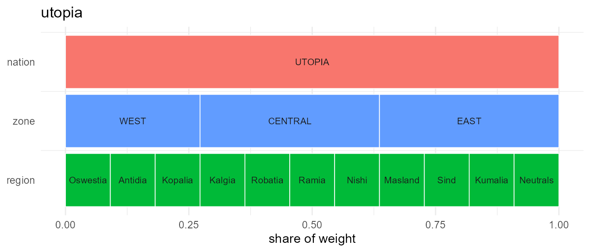
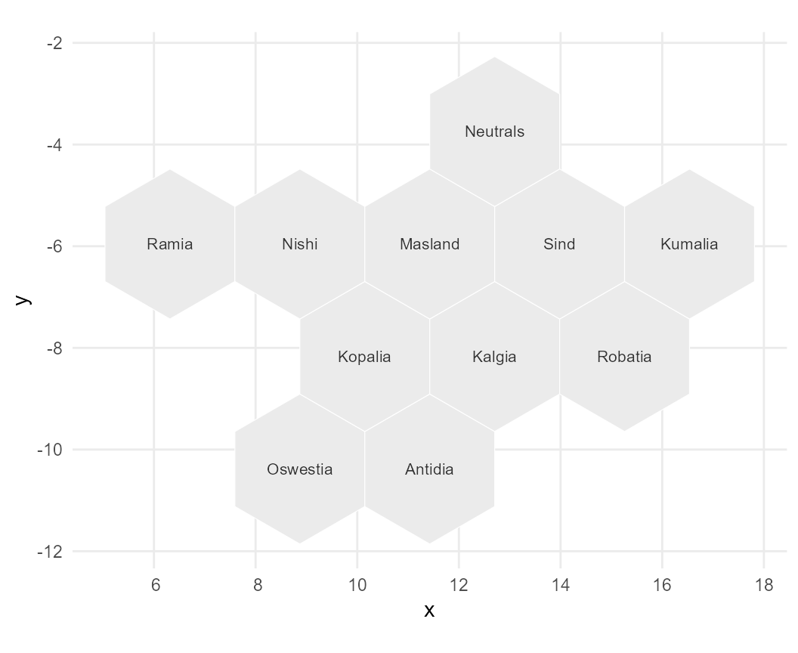
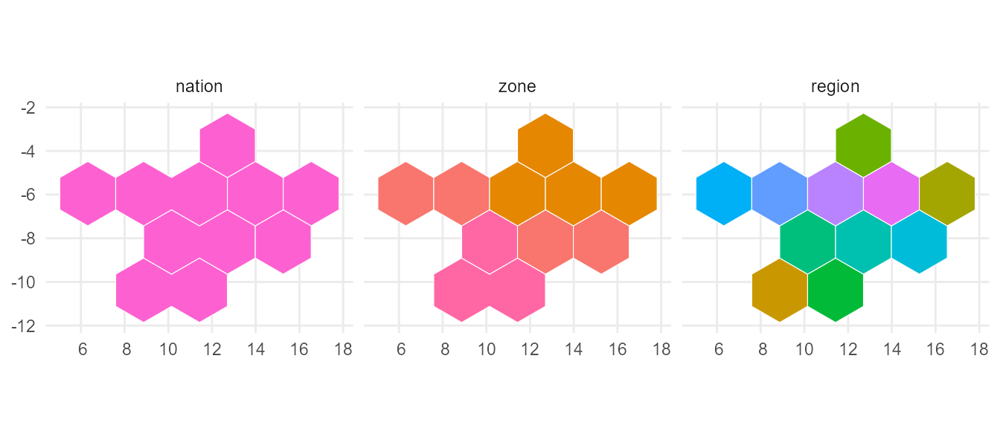
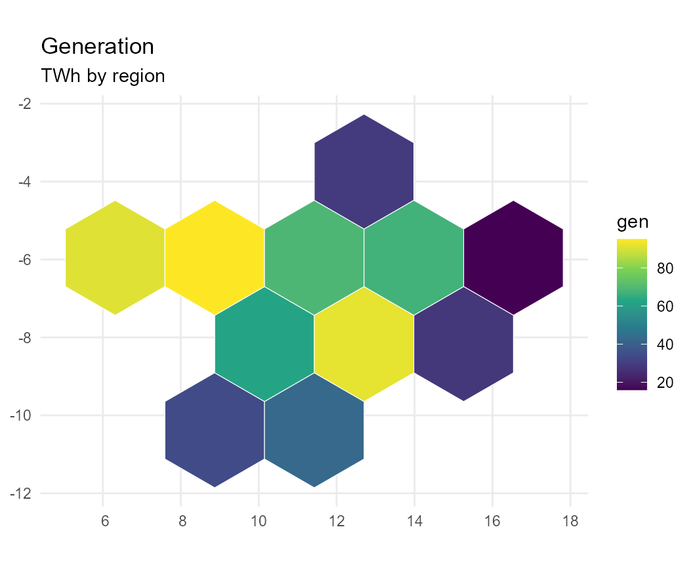
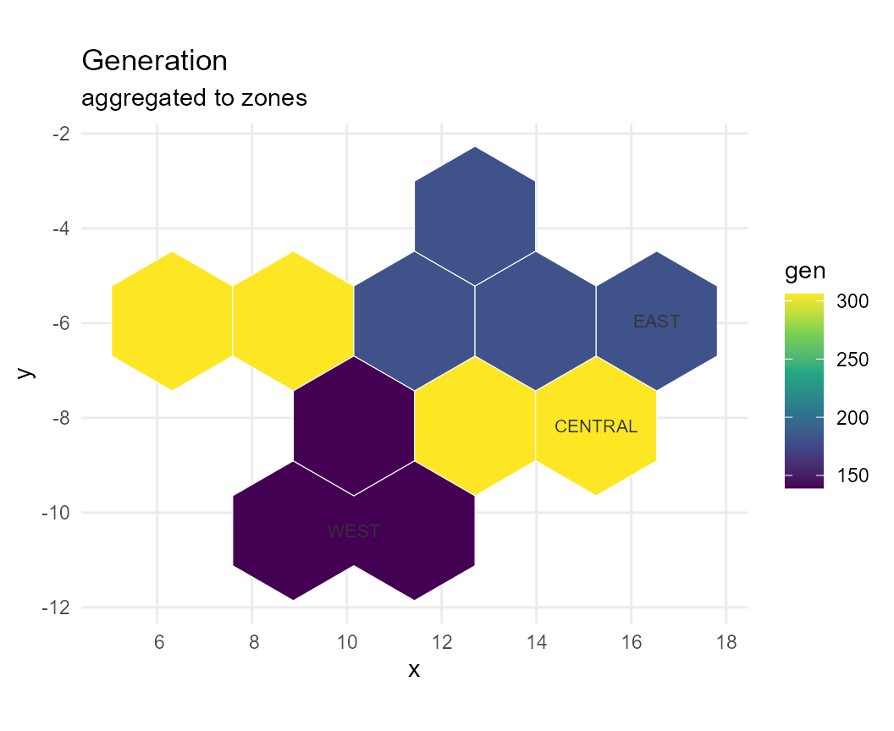
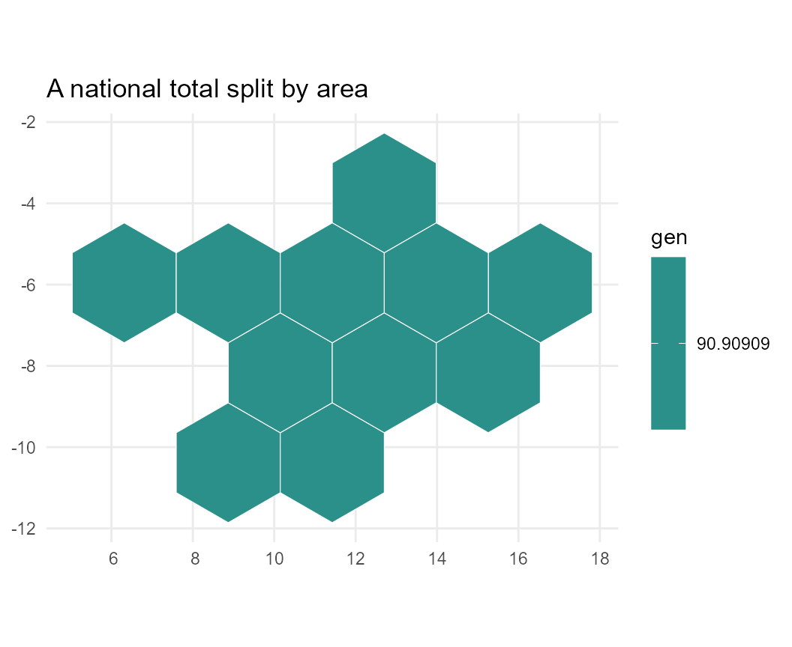
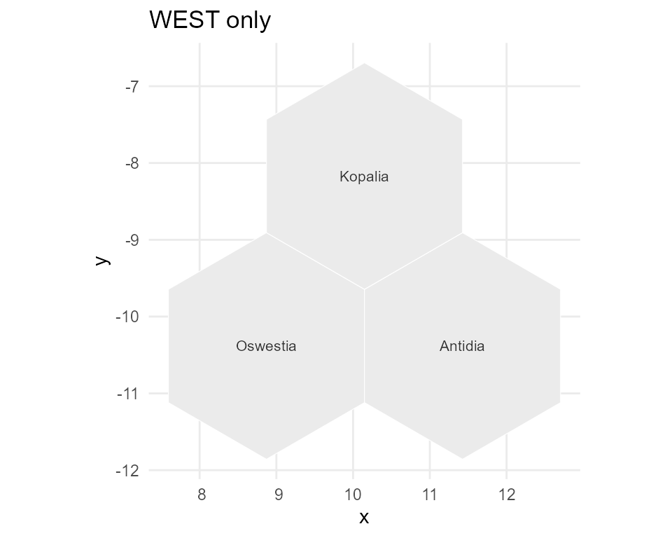

A map to draw on
geoscales ships no map data, so this article borrows
one. The UTOPIA reference regions from
energyRt are ideal for it: eleven regions nested
nation -> zone -> region, entirely offline, and
completely invented — so nothing here depends on a network, a licence,
or any real-world boundary.
gs <- energyRt::utopia_geoscale("honeycomb")
#> Warning in geoscales::geo_attach_geometry(gs, utopia$map[[layout]], by = "region", : 'geo_attach_geometry' is deprecated.
#> Use 'attach_geometry_geoscale' instead.
#> See help("Deprecated")
#> Warning in geoscales::geo_area(gs, name = "area"): 'geo_area' is deprecated.
#> Use 'add_area_geoscale' instead.
#> See help("Deprecated")
gs
#> Geoscale: utopia
#> Description: UTOPIA reference regions, nested nation -> zone -> region
#> Levels (3, coarsest first):
#> - nation (1)
#> - zone (3)
#> - region (11)
#> Atoms: 11
#> Weights: area (default: area)
#> CRS: NA
#> Geometry: attached (11 features)That one call returns a finished Geoscale: hierarchy,
geometry and an area weight. Everything from here on is
plain geoscales.
head(as.data.frame(S7::prop(gs, "leaves")), 4)
#> nation zone region name area
#> 1 UTOPIA WEST R1 Oswestia 5.655895
#> 2 UTOPIA WEST R2 Antidia 5.655895
#> 3 UTOPIA WEST R3 Kopalia 5.655895
#> 4 UTOPIA CENTRAL R4 Kalgia 5.655895Two views of the same object
A Geoscale is a hierarchy that may carry
geometry, and the two are drawn by different functions.
geo_autoplot() shows the structure — one
row per level, widths proportional to weight — and needs no geometry at
all:
geo_autoplot(gs)
#> Warning in geo_autoplot(gs): 'geo_autoplot' is deprecated.
#> Use 'geoscale_autoplot' instead.
#> See help("Deprecated")
geo_plot() shows the same regions in
space:
geo_plot(gs, label = TRUE)
#> Warning in geo_plot(gs, label = TRUE): 'geo_plot' is deprecated.
#> Use 'geoscale_plot' instead.
#> See help("Deprecated")
Note the labels. The icicle above says WEST,
CENTRAL, EAST but the map says
Oswestia, Antidia, …: a geoscale can declare a column
of display names (labels = "name" here), and they are used
wherever they are unambiguous. A zone made of Oswestia and Antidia has
no name of its own, so it keeps its code rather than borrowing one of
its parts.
Geometry is separable from hierarchy
UTOPIA ships four alternative layouts. The hierarchy is identical in
all of them — only the shapes differ, which is exactly the point: a
Geoscale is a nesting first and a map second.
geo_geometry() returns an ordinary sf
object, so combining the layouts into one faceted figure needs nothing
from this package:
layouts <- c("squares", "honeycomb", "island", "continent")
shapes <- do.call(rbind, lapply(layouts, function(l) {
s <- geo_geometry(energyRt::utopia_geoscale(l), level = "region")
s$layout <- l
s
}))
#> Warning in geo_geometry(energyRt::utopia_geoscale(l), level = "region"): 'geo_geometry' is deprecated.
#> Use 'geoscale_geometry' instead.
#> See help("Deprecated")
#> Warning in geoscales::geo_attach_geometry(gs, utopia$map[[layout]], by = "region", : 'geo_attach_geometry' is deprecated.
#> Use 'attach_geometry_geoscale' instead.
#> See help("Deprecated")
#> Warning in geoscales::geo_area(gs, name = "area"): 'geo_area' is deprecated.
#> Use 'add_area_geoscale' instead.
#> See help("Deprecated")
#> Warning in geo_geometry(energyRt::utopia_geoscale(l), level = "region"): 'geo_geometry' is deprecated.
#> Use 'geoscale_geometry' instead.
#> See help("Deprecated")
#> Warning in geoscales::geo_attach_geometry(gs, utopia$map[[layout]], by = "region", : 'geo_attach_geometry' is deprecated.
#> Use 'attach_geometry_geoscale' instead.
#> See help("Deprecated")
#> Warning in geoscales::geo_area(gs, name = "area"): 'geo_area' is deprecated.
#> Use 'add_area_geoscale' instead.
#> See help("Deprecated")
#> Warning in geo_geometry(energyRt::utopia_geoscale(l), level = "region"): 'geo_geometry' is deprecated.
#> Use 'geoscale_geometry' instead.
#> See help("Deprecated")
#> Warning in geoscales::geo_attach_geometry(gs, utopia$map[[layout]], by = "region", : 'geo_attach_geometry' is deprecated.
#> Use 'attach_geometry_geoscale' instead.
#> See help("Deprecated")
#> Warning in geoscales::geo_area(gs, name = "area"): 'geo_area' is deprecated.
#> Use 'add_area_geoscale' instead.
#> See help("Deprecated")
#> Warning in geo_geometry(energyRt::utopia_geoscale(l), level = "region"): 'geo_geometry' is deprecated.
#> Use 'geoscale_geometry' instead.
#> See help("Deprecated")
#> Warning in geoscales::geo_attach_geometry(gs, utopia$map[[layout]], by = "region", : 'geo_attach_geometry' is deprecated.
#> Use 'attach_geometry_geoscale' instead.
#> See help("Deprecated")
#> Warning in geoscales::geo_area(gs, name = "area"): 'geo_area' is deprecated.
#> Use 'add_area_geoscale' instead.
#> See help("Deprecated")
ggplot2::ggplot(shapes) +
ggplot2::geom_sf(fill = "grey92", colour = "white") +
ggplot2::facet_wrap(~layout) +
ggplot2::theme_minimal()
One level per panel
geo_plot(level = ) dissolves the atoms up to whichever
level you ask for. Eleven regions become three zones become one
nation:
levels_sf <- do.call(rbind, lapply(geo_levels(gs), function(l) {
s <- geo_geometry(gs, level = l)
names(s)[1] <- "code"
s$level <- l
s
}))
#> Warning in geo_levels(gs): 'geo_levels' is deprecated.
#> Use 'geoscale_levels' instead.
#> See help("Deprecated")
#> Warning in geo_geometry(gs, level = l): 'geo_geometry' is deprecated.
#> Use 'geoscale_geometry' instead.
#> See help("Deprecated")
#> Warning in geo_geometry(gs, level = l): 'geo_geometry' is deprecated.
#> Use 'geoscale_geometry' instead.
#> See help("Deprecated")
#> Warning in geo_geometry(gs, level = l): 'geo_geometry' is deprecated.
#> Use 'geoscale_geometry' instead.
#> See help("Deprecated")
levels_sf$level <- factor(levels_sf$level, levels = geo_levels(gs))
#> Warning in geo_levels(gs): 'geo_levels' is deprecated.
#> Use 'geoscale_levels' instead.
#> See help("Deprecated")
ggplot2::ggplot(levels_sf) +
ggplot2::geom_sf(ggplot2::aes(fill = code), colour = "white",
show.legend = FALSE) +
ggplot2::facet_wrap(~level) +
ggplot2::theme_minimal()
Values on the map
Pass a data.frame with a column named after the level,
and name the column to colour by:
set.seed(1)
gen <- data.frame(region = geo_regions(gs, "region"),
gen = round(runif(11, 10, 100)))
#> Warning in geo_regions(gs, "region"): 'geo_regions' is deprecated.
#> Use 'geoscale_regions' instead.
#> See help("Deprecated")
geo_plot(gs, gen, level = "region", fill = "gen",
palette = "D", title = "Generation", subtitle = "TWh by region")
#> Warning in geo_plot(gs, gen, level = "region", fill = "gen", palette = "D", : 'geo_plot' is deprecated.
#> Use 'geoscale_plot' instead.
#> See help("Deprecated")
geo_plot() is the package’s only choropleth renderer,
and it is deliberately ignorant of what your numbers mean. Callers that
do know — energyRt::geo_map() is one — prepare the
data.frame and hand it here rather than drawing their own
geom_sf().
Recasting, seen on the map
geo_recast() is the one verb that moves data between
levels, in both directions. Aggregating eleven regions into three zones
with rule = "sum":
by_zone <- geo_recast(gen, gs, from = "region", to = "zone", rule = "sum")
#> Warning in geo_recast(gen, gs, from = "region", to = "zone", rule = "sum"): 'geo_recast' is deprecated.
#> Use 'recast_geoscale' instead.
#> See help("Deprecated")
by_zone
#> zone gen
#> 1 CENTRAL 306
#> 2 EAST 181
#> 3 WEST 139
sum(by_zone$gen) == sum(gen$gen)
#> [1] TRUE
geo_plot(gs, by_zone, level = "zone", fill = "gen",
palette = "D", title = "Generation", subtitle = "aggregated to zones",
label = TRUE)
#> Warning in geo_plot(gs, by_zone, level = "zone", fill = "gen", palette = "D", : 'geo_plot' is deprecated.
#> Use 'geoscale_plot' instead.
#> See help("Deprecated")
The same verb runs back down. Going down, rule = "sum"
splits each total in proportion to a weight, so the national figure is
conserved:
national <- data.frame(nation = "UTOPIA", gen = 1000)
split_back <- geo_recast(national, gs, from = "nation", to = "region",
rule = "sum", weight = "area")
#> Warning in geo_recast(national, gs, from = "nation", to = "region", rule = "sum", : 'geo_recast' is deprecated.
#> Use 'recast_geoscale' instead.
#> See help("Deprecated")
geo_plot(gs, split_back, level = "region", fill = "gen", palette = "D",
title = "A national total split by area")
#> Warning in geo_plot(gs, split_back, level = "region", fill = "gen", palette = "D", : 'geo_plot' is deprecated.
#> Use 'geoscale_plot' instead.
#> See help("Deprecated")
Extensive and intensive quantities
The rule matters, and the map makes the difference obvious.
Generation adds up — it is extensive, so
sum is right. A capacity factor does not: averaging it
needs a weight, and summing it is meaningless.
cf <- data.frame(region = geo_regions(gs, "region"),
cf = round(runif(11, 0.2, 0.6), 2))
#> Warning in geo_regions(gs, "region"): 'geo_regions' is deprecated.
#> Use 'geoscale_regions' instead.
#> See help("Deprecated")
right <- geo_recast(cf, gs, "region", "zone", rule = "weighted_mean",
weight = "area")
#> Warning in geo_recast(cf, gs, "region", "zone", rule = "weighted_mean", : 'geo_recast' is deprecated.
#> Use 'recast_geoscale' instead.
#> See help("Deprecated")
wrong <- geo_recast(cf, gs, "region", "zone", rule = "sum")
#> Warning in geo_recast(cf, gs, "region", "zone", rule = "sum"): 'geo_recast' is deprecated.
#> Use 'recast_geoscale' instead.
#> See help("Deprecated")
merge(right, wrong, by = "zone", suffixes = c("_weighted_mean", "_sum"))
#> zone cf_weighted_mean cf_sum
#> 1 CENTRAL 0.5000000 2.00
#> 2 EAST 0.4275000 1.71
#> 3 WEST 0.3633333 1.09Every value in the sum column is above 1.0, and a
capacity factor above 1.0 is not a number that exists. The weighted mean
stays in range because it asks how much of each region there
is; the sum does not. Register the rule once per parameter and it cannot
be got wrong twice — see vignette("geoscales").
Subsetting
geo_filter() returns a smaller Geoscale,
geometry included, so it plots like any other:
west <- geo_filter(gs, level = "zone", region = "WEST")
#> Warning in geo_filter(gs, level = "zone", region = "WEST"): 'geo_filter' is deprecated.
#> Use 'filter_geoscale' instead.
#> See help("Deprecated")
geo_plot(west, label = TRUE, title = "WEST only")
#> Warning in geo_plot(west, label = TRUE, title = "WEST only"): 'geo_plot' is deprecated.
#> Use 'geoscale_plot' instead.
#> See help("Deprecated")
Bringing your own source
UTOPIA arrived here as a plain function call, but any source can be
registered with the provider interface that rnaturalearth
uses — see vignette("from-naturalearth"):
geo_register_provider(
"utopia",
fetch = function(layout = "honeycomb") {
merge(energyRt::utopia$geo, energyRt::utopia$map[[layout]], by = "region")
},
levels = c("nation", "zone", "region"),
desc = "UTOPIA reference regions (energyRt)"
)
geoscale_from_provider("utopia")See also
-
vignette("geoscales")— what a Geoscale is, and the recasting rules -
vignette("from-naturalearth")— building one from real boundary data